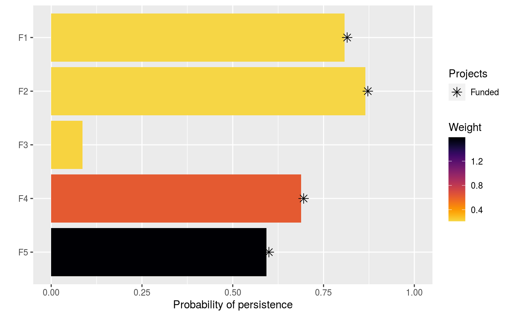

The oppr R package a decision support tool for prioritizing conservation projects. Prioritizations can be developed by maximizing expected feature richness, expected phylogenetic diversity, the number of features that meet persistence targets, or identifying a set of projects that meet persistence targets for minimal cost. Constraints (e.g. lock in specific actions) and feature weights can also be specified to further customize prioritizations. After defining a project prioritization problem, solutions can be obtained using exact algorithms, heuristic algorithms, or random processes. In particular, it is recommended to install the 'Gurobi' optimizer (available from https://www.gurobi.com) because it can identify optimal solutions very quickly. Finally, methods are provided for comparing different prioritizations and evaluating their benefits.
To make the most of this package, the ggtree and
gurobi R packages will need to be installed.
Since the ggtree package is exclusively available
at Bioconductor---and is not available on
The Comprehensive R Archive Network---please
execute the following command to install it:
source("https://bioconductor.org/biocLite.R");biocLite("ggtree").
If the installation process fails, please consult the
package's online documentation. To install the gurobi package, the
Gurobi optimization suite will first need to
be installed (see instructions for Linux,
Mac OSX, and
Windows operating systems). Although
Gurobi is a commercial software, academics
can obtain a
special license for no cost. After installing the
Gurobi optimization suite, the gurobi
package can then be installed (see instructions for Linux,
Mac OSX, and
Windows operating systems).
Please refer to the package vignette for more information and worked
examples. This can be accessed using the code
vignette("oppr").
# load data
data(sim_projects, sim_features, sim_actions)
# print project data
print(sim_projects)
#> # A tibble: 6 × 13
#> name success F1 F2 F3 F4 F5 F1_ac…¹ F2_ac…² F3_ac…³
#> <chr> <dbl> <dbl> <dbl> <dbl> <dbl> <dbl> <lgl> <lgl> <lgl>
#> 1 F1_project 0.919 0.791 NA NA NA NA TRUE FALSE FALSE
#> 2 F2_project 0.923 NA 0.888 NA NA NA FALSE TRUE FALSE
#> 3 F3_project 0.829 NA NA 0.502 NA NA FALSE FALSE TRUE
#> 4 F4_project 0.848 NA NA NA 0.690 NA FALSE FALSE FALSE
#> 5 F5_project 0.814 NA NA NA NA 0.617 FALSE FALSE FALSE
#> 6 baseline_… 1 0.298 0.250 0.0865 0.249 0.182 FALSE FALSE FALSE
#> # … with 3 more variables: F4_action <lgl>, F5_action <lgl>,
#> # baseline_action <lgl>, and abbreviated variable names ¹F1_action,
#> # ²F2_action, ³F3_action
# print action data
print(sim_features)
#> # A tibble: 5 × 2
#> name weight
#> <chr> <dbl>
#> 1 F1 0.211
#> 2 F2 0.211
#> 3 F3 0.221
#> 4 F4 0.630
#> 5 F5 1.59
# print feature data
print(sim_actions)
#> # A tibble: 6 × 4
#> name cost locked_in locked_out
#> <chr> <dbl> <lgl> <lgl>
#> 1 F1_action 94.4 FALSE FALSE
#> 2 F2_action 101. FALSE FALSE
#> 3 F3_action 103. TRUE FALSE
#> 4 F4_action 99.2 FALSE FALSE
#> 5 F5_action 99.9 FALSE TRUE
#> 6 baseline_action 0 FALSE FALSE
# build problem
p <- problem(sim_projects, sim_actions, sim_features,
"name", "success", "name", "cost", "name") %>%
add_max_richness_objective(budget = 400) %>%
add_feature_weights("weight") %>%
add_binary_decisions()
# print problem
print(p)
#> Project Prioritization Problem
#> actions F1_action, F2_action, F3_action, ... (6 actions)
#> projects F1_project, F2_project, F3_project, ... (6 projects)
#> features F1, F2, F3, ... (5 features)
#> action costs: min: 0, max: 103.22583
#> project success: min: 0.81379, max: 1
#> objective: Maximum richness objective [budget (400)]
#> targets: none
#> weights: min: 0.21136, max: 1.59167
#> decisions Binary decision
#> constraints: <none>
#> solver: default
# \dontrun{
# solve problem
s <- solve(p)
#> Gurobi Optimizer version 9.5.2 build v9.5.2rc0 (linux64)
#> Thread count: 4 physical cores, 8 logical processors, using up to 1 threads
#> Optimize a model with 47 rows, 47 columns and 102 nonzeros
#> Model fingerprint: 0xa33f6587
#> Variable types: 0 continuous, 42 integer (42 binary)
#> Semi-Variable types: 5 continuous, 0 integer
#> Coefficient statistics:
#> Matrix range [9e-02, 1e+02]
#> Objective range [2e-01, 2e+00]
#> Bounds range [1e+00, 1e+00]
#> RHS range [1e+00, 4e+02]
#> Found heuristic solution: objective 0.6654645
#> Presolve removed 16 rows and 12 columns
#> Presolve time: 0.00s
#> Presolved: 31 rows, 35 columns, 64 nonzeros
#> Variable types: 0 continuous, 35 integer (35 binary)
#> Root relaxation presolved: 31 rows, 35 columns, 64 nonzeros
#>
#>
#> Root relaxation: objective 1.749045e+00, 11 iterations, 0.00 seconds (0.00 work units)
#>
#> Nodes | Current Node | Objective Bounds | Work
#> Expl Unexpl | Obj Depth IntInf | Incumbent BestBd Gap | It/Node Time
#>
#> * 0 0 0 1.7490448 1.74904 0.00% - 0s
#>
#> Explored 1 nodes (11 simplex iterations) in 0.00 seconds (0.00 work units)
#> Thread count was 1 (of 8 available processors)
#>
#> Solution count 1: 1.74904
#>
#> Optimal solution found (tolerance 0.00e+00)
#> Best objective 1.749044775334e+00, best bound 1.749044775334e+00, gap 0.0000%
# print output
print(s)
#> # A tibble: 1 × 21
#> solution status obj cost F1_action F2_ac…¹ F3_ac…² F4_ac…³ F5_ac…⁴ basel…⁵
#> <int> <chr> <dbl> <dbl> <dbl> <dbl> <dbl> <dbl> <dbl> <dbl>
#> 1 1 OPTIMAL 1.75 395. 1 1 0 1 1 1
#> # … with 11 more variables: F1_project <dbl>, F2_project <dbl>,
#> # F3_project <dbl>, F4_project <dbl>, F5_project <dbl>,
#> # baseline_project <dbl>, F1 <dbl>, F2 <dbl>, F3 <dbl>, F4 <dbl>, F5 <dbl>,
#> # and abbreviated variable names ¹F2_action, ²F3_action, ³F4_action,
#> # ⁴F5_action, ⁵baseline_action
# print which actions are funded in the solution
s[, sim_actions$name, drop = FALSE]
#> # A tibble: 1 × 6
#> F1_action F2_action F3_action F4_action F5_action baseline_action
#> <dbl> <dbl> <dbl> <dbl> <dbl> <dbl>
#> 1 1 1 0 1 1 1
# print the expected probability of persistence for each feature
# if the solution were implemented
s[, sim_features$name, drop = FALSE]
#> # A tibble: 1 × 5
#> F1 F2 F3 F4 F5
#> <dbl> <dbl> <dbl> <dbl> <dbl>
#> 1 0.808 0.865 0.0865 0.688 0.592
# visualize solution
plot(p, s)

# }